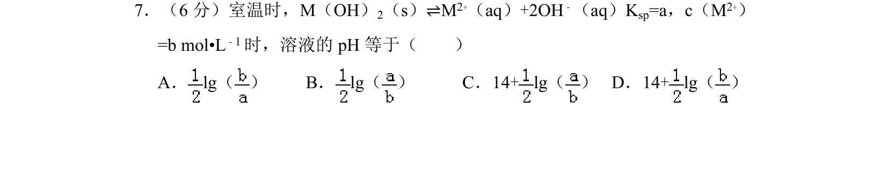
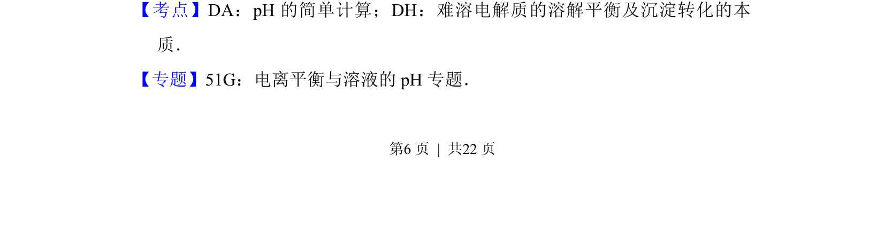
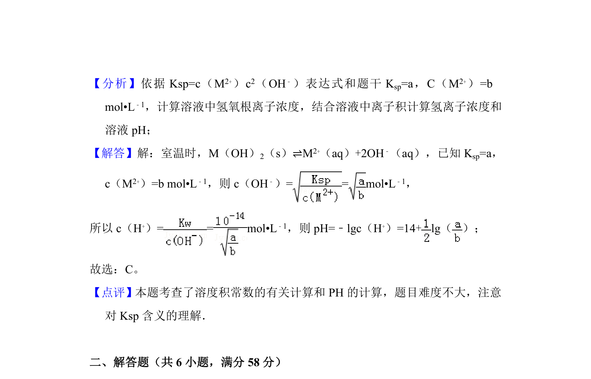

考点：pH 溶度积 溶解平衡

该题考查难溶电解质溶解平衡与溶液pH的计算关系，需结合溶度积常数求算氢氧根浓度进而确定pH。


📄 原 PDF 第 6 页：
素材/真题/吉林/2008-2024·（吉林）化学高考真题/2013年高考化学试卷（新课标Ⅱ）（解析卷）.pdf
7．（6分）室温时，M（OH） 2（s）⇌M2+（aq）+2OH﹣（aq）Ksp=a，c（M2+） =b mol•L﹣1时，溶液的pH等于（ ） A．lg（ ）B．lg（ ）C．14+lg（ ）D．14+lg（ ）
【考点】DA：pH的简单计算；DH：难溶电解质的溶解平衡及沉淀转化的本 质．菁优网版权所有 【专题】51G：电离平衡与溶液的pH专题．